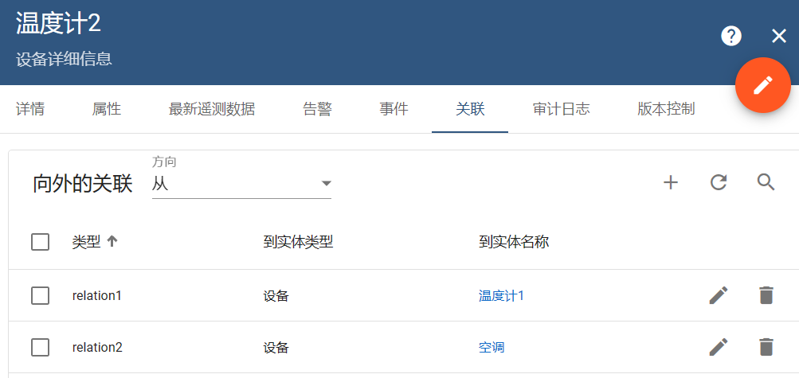
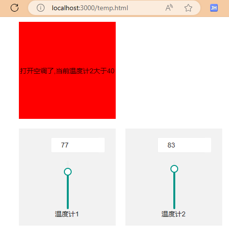
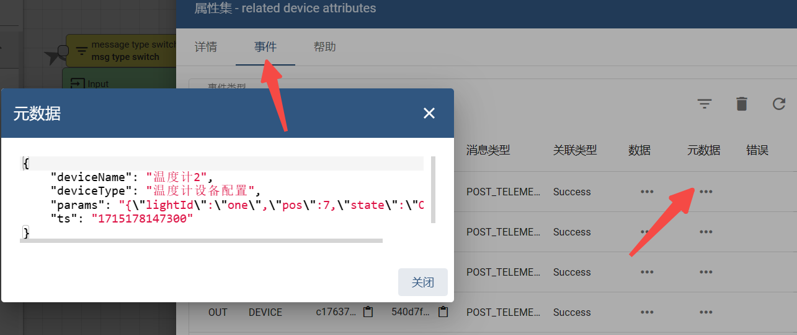
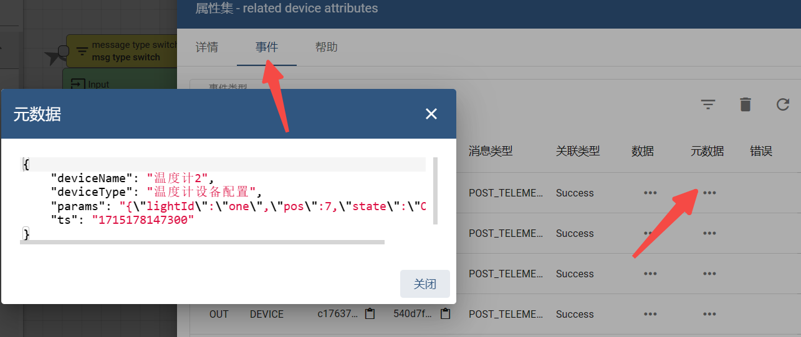

Smart Air Conditioning Control With ThingsBoard
Automating Climate Control: Leveraging Dual Thermometers for Smart Air Conditioning via ThingsBoard⌗
记录一次在thingsboard中通过同时满足两个温度计的温度条件来控制空调开关机
当然这并不是真实过程对接调式，只是通过模拟的方法来熟练一下thingsboard的ruleChain
第一步，创建一个空的规则链，名称就叫两个温度计控制空调的规则链⌗

第二步，创建一个设备配置，名称就叫两个温度计控制空调的设备配置⌗

第三步，分别添加三个设备温度计1、温度计2、空调⌗

第四步，给温度计1,温度计2 设备添加关联关系⌗
添加关系的原因是，因为温度计1,温度计2 的温度都满足了条件需要给空调发送rpc控制消息
才需创建关联空调的，这里可以理解是温度计控制空调，所以创建温度计向外的关联（from）的关系
同理也可以理解，空调需要接受温度计的控制消息向内的关联（to）的关系，这两个关系方向都可以
这里以from关系为例创建，但请注意，这里的关系类型一定要唯一，不能一样我这里建立了两条关系分别是relation1,
relation2

第五步，给两个温度计控制空调的规则链这个空白的规则链编写规则链，这是最核心的部分⌗
梳理自己的流程需求，我这里的流程是前提条件，温度计1、温度计2、空调 这三个设备已经连上了thingsboard 1883 mqqt 端口
且处理活动状态，在实体设备可以看到设备状态。
我的主要流程是，温度计1和温度计2都在同时发送遥测消息数据格式为：
{temperature:25} 并由save timeseries 这个节点保存数据
当接受到温度计1的遥测数据时，再查询温度计2的遥测温度数据，并把温度计2的数据保存在元数据中metadata
这是由related device attrbuite 查询得到温度计2的数据
如果 success 然后接下来由 switch 判断两个温度数据是否满足，代码如下
var temperature1 = msg.temperature;
var temperature2 = metadata.temperature; //从元数据获取temperature数据
function nextRelation(metadata, msg) {
return ['other'];
}
if(msgType == 'POST_TELEMETRY_REQUEST') {
if(temperature1 > 30 && temperature2 > 40){
return ["温度计1>30且温度计2>40"];
}else if(temperature1 < 30 && temperature2 < 40){
return ["温度计1<30且温度计2<40"];
}
}
return nextRelation(metadata, msg);
以下switch节点产生了两个分支，接下来到了change originator
这一步是关键，因为我们上述所说到是由温度计把消息发送给空调这是错误的理解，
因为需要空调（self）自已给自己发送消息才能控制空调，所以这一步目的是将发送消息者切换为空调本身
当切换success成后，接下来是script 转换节点 主要是组装空调能解析的数据结构
我这里定义的是数据如下, 消息体为newMsg
var newMsg = {
"method": "setKongTiao",
"params": {
"state": "OFF"
}
}
return {msg: newMsg, metadata: metadata, msgType: msgType};

第六步，debug调试⌗
用网页模拟成功，红色区域为打开空调

打开调式
 点击事件，查看数据，看数据是否符合预期

点击事件，查看数据，看数据是否符合预期

通过以上步骤，我们可以构建一个高效且自动化的空调控制系统，使室内环境保持在舒适的温度范围内。这不仅提高了居住或工作环境的舒适度，同时也有助于节约能源。 希望这次介绍能够帮助你更好地理解在ThingsBoard平台上如何实现复杂的设备互动和自动化控制。如果需要进一步的信息或有其他疑问，请继续关注我的博客或提出咨询。
不得不说thingsboard非常强大，你无需编写查询sql语句去获取数据，相反如果用了nodered做流处理，需要编写sql语句来获取设备数据的